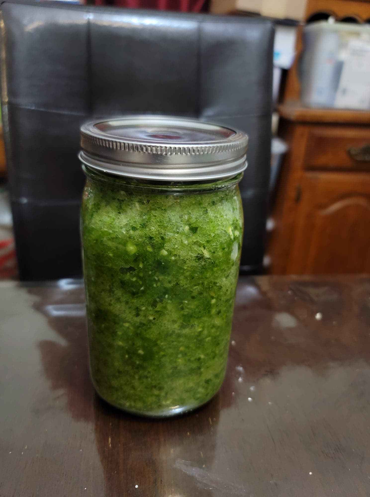

Puerto Rican Sofrito

Ingredients:
- 3 Green Bell peppers, stemmed and seeded
- 10 Ají dulce, stemmed and seeded
- 3 White onions, peeled and quartered
- 1 head Garlic, peeled
- 1 Bunch Cilantro, stems included
- 15 leaves Culantro
Instructions:
- Combine all of the ingredients into a large food processor. Purée until finely minced. Transfer to jar and place into a fridge, or use immediately.